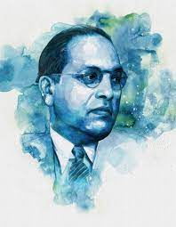

Dr. Babasaheb Ambedkar

Education is what makes a person fearless, teaches him the lesson of unity, makes him aware of his rights and inspires him to struggle for his rights.
About the Legend
- Dr Bhimrao Ramji Ambedkar, also called Babasaheb Ambedkar, was one of the most prominent figures of the 20th century. An Indian jurist, economist, politician, Dalit leader, and social reformer.
- In his early career, he was an economist, professor, and lawyer. His later life was marked by his political activities.
- Ambedkar in the Bombay Legislature, with the Simon Commission and at the Round Table Conferences, 1927–1939.
- Philosophy of Hinduism; India and the Pre-requisites of Communism; Revolution and Counter-revolution; Buddha or Karl Marx
- Dr Bhimrao Ramji Ambedkar, also called Babasaheb Ambedkar, was one of the most prominent figures of the 20th century. An Indian jurist, economist, politician, Dalit leader, and social reformer.
- In his early career, he was an economist, professor, and lawyer. His later life was marked by his political activities.
- Ambedkar in the Bombay Legislature, with the Simon Commission and at the Round Table Conferences, 1927–1939.
- Philosophy of Hinduism; India and the Pre-requisites of Communism; Revolution and Counter-revolution; Buddha or Karl Marx